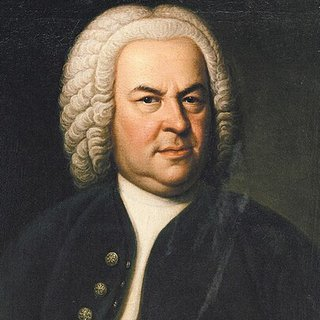

Compositores › Johann Sebastian Bach

Johann Sebastian Bach
O grande mestre do Barroco: organista, professor e pai de vinte filhos, escreveu a música com a qual todos os pianistas ainda hoje aprendem.
Vida
Nasceu em Eisenach, na Alemanha, numa família de músicos. Órfão aos dez anos, cresceu com o irmão mais velho, que lhe ensinou a tocar teclado.
Trabalhou como organista e mestre de capela em várias cidades alemãs e, de 1723 até a morte, foi Kantor da Igreja de São Tomé em Leipzig, onde escrevia toda semana música para os cultos.
Em vida foi admirado sobretudo como organista; depois da sua morte, a sua música ficou quase esquecida, até que em 1829 Felix Mendelssohn regeu em Berlim a Paixão segundo São Mateus e o trouxe de volta ao centro da história da música.
Retrato: Elias Gottlob Haussmann (1748), domínio público, do Wikimedia Commons.

Curiosidades
- Em 1705, aos vinte anos, foi a pé de Arnstadt até Lübeck, cerca de 400 km, para ouvir o famoso organista Dietrich Buxtehude.
- O Cravo Bem Temperado (1722) tem um prelúdio e uma fuga em cada uma das 24 tonalidades: uma forma de mostrar que com a nova afinação era possível tocar em todas.
- As Invenções a duas vozes nasceram como exercícios para ensinar o filho Wilhelm Friedemann a tocar.
No piano
- Na época de Bach o piano ainda não existia: tocava-se cravo ou clavicórdio. Use pouco ou nenhum pedal.
- Cada mão canta a sua própria melodia: estude com as mãos separadas até que cada uma se sustente sozinha.
- Cuide mais da articulação (notas ligadas e destacadas) do que do volume.
Músicas para aprender 6 músicas

Aprenda nota por nota com o Piano Learning
Com “Espere a nota”, a música para até você tocar a tecla certa, no celular ou no seu próprio piano (o app escuta você). Mãos separadas, velocidade a partir de 10%, partitura sempre à frente.
Grátis como La Campanella, a Marcha Turca, Jingle Bells e Frère Jacques. Centenas de outras músicas com uma única compra, sem assinatura.